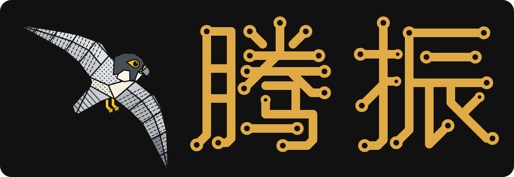

![A Chinatown street at night, seen from the sidewalk, between brick buildings. Tents line the dark, shut shops on one side, glowing from inside; the nearest, its door open, is kept as a home, with a made bed, books, a laptop on a crate and fairy lights; across the street the shops are open and lit. A copper trace inlaid in the sidewalk leaves its door and joins a path that runs from your feet straight down the street, under a gate and past red sign boards and lanterns, to the door of the tallest tower in a lit skyline.](img/mural-street-night.svg)

A bench you can set up anywhere, stocked from the world's electronics surplus.
Project #1: the whole bench — scope, signal generator, supply and load — from generic parts, every step published.
Two-channel digitizer and signal generator
In the Red Pitaya class.
- FPGA
- Colorlight i9 · Lattice ECP5 LFE5U-45F
- ADC
- TI ADS4245 · 14-bit · up to 125 MS/s
- SOC
- LiteX + VexRiscv · firmware in Rust
- AFE
- Custom analog front end · KiCad, fabricated at JLCPCB
- HOST
- Rust services: DuckDB ingest, SCPI, MCP
| RED PITAYA 125-14 | TENTZHEN TARGET | |
|---|---|---|
| Channels in / out | 2 / 2 | 2 / 2, outputs in phase 5 |
| Sample rate | 125 MS/s | up to 125 MS/s |
| Resolution | 14-bit | 14-bit |
| Bandwidth | DC–60 MHz | set by the front end |
unknownEvery Tentzhen figure is a target until it is measured.
The mesh
A LoRa mesh: handhelds, repeaters and a phone, passing text and position.
- MCU
- Nordic nRF52840
- RADIO
- Semtech SX1262 · LoRa
- MESH
- UMSH · Ed25519 addresses, AES-SIV
- OS
- Tock, once UMSH is ported · UMSH's own firmware until then
- NODES
- XIAO dev boards · T-Echo handheld · SenseCAP solar repeater
- PHONE
- iPhone · UMSH's iOS app
unknownNothing ordered or measured yet.
A neural network hardwired into an FPGA
LittleBit × Taalas: weights well under one bit each, built into the logic.
- FPGA
- Colorlight i9 · Lattice ECP5 LFE5U-45F
- MODEL
- MLP 784 → 256 → 128 → 10 · MNIST first
- BITS
- Binary low-rank factors and scales, after LittleBit
- ROMS
- Weights in LUT logic · the same bits in block RAM
- FOR
- Simulations with trained agents: SocialJax, Concordia · local AI companions
measuredOn a Colorlight i9 at 50 MHz, the network at r = 16 scored MNIST's first 1,000 test images exactly as the golden model does, 1,219 clocks each (2026-11-23-i9-littlebit-network).
tested97.17 % of MNIST's 10,000 test images right, at 0.125 bits a weight in its first layer; the gateware scores all 10,000 as the golden model does.
An open fab, Hacker Fab adjacent
To TSMC and ASML, on a Hacker Fab budget: the gaps, row by row.
- BASE
- Hacker Fab's open tools and process
- LITHO
- Maskless stepper · a resin printer's projector, fed by the i9
- FIRST
- NMOS transistors on bought wafers
- MADE
- In house where the safety rules allow · Rust and CortenForge where they can be
- RULES
- Safety first · mains tools bought, listed and legal
unknownNothing built yet.